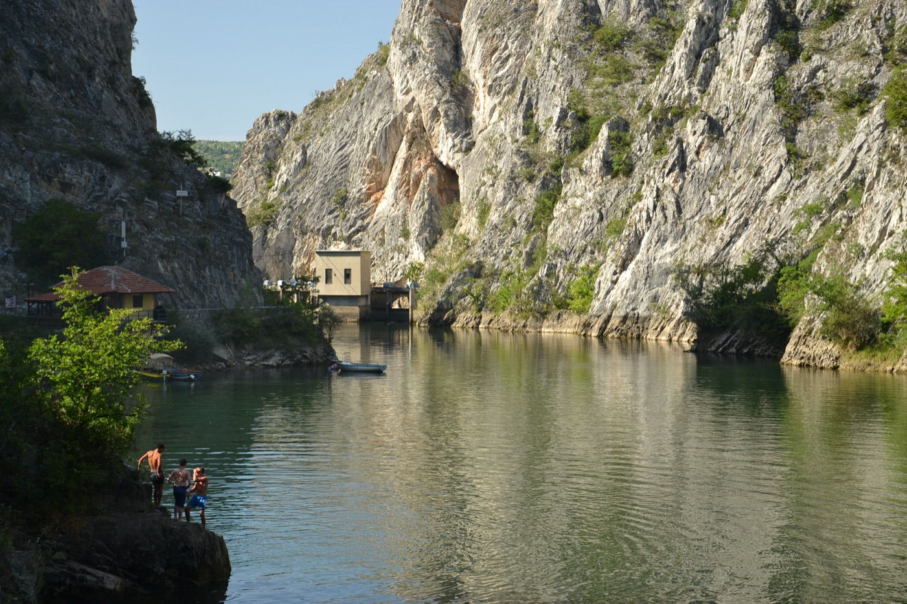
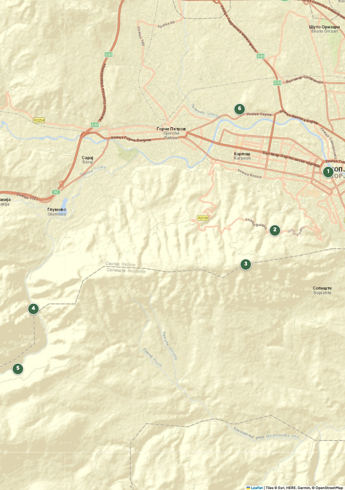
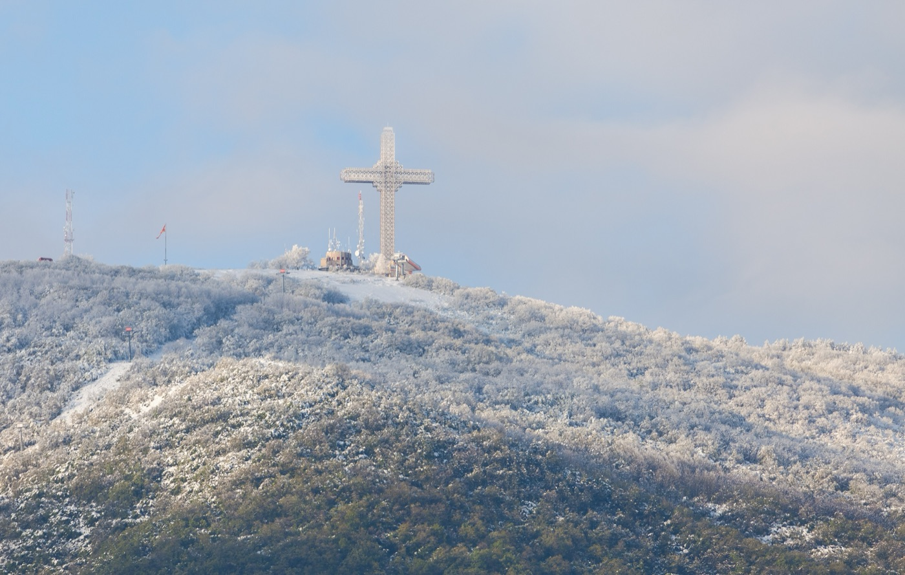
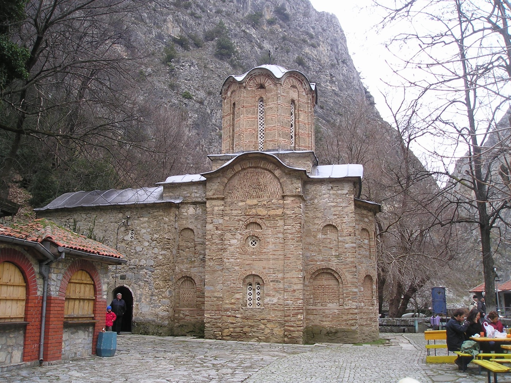
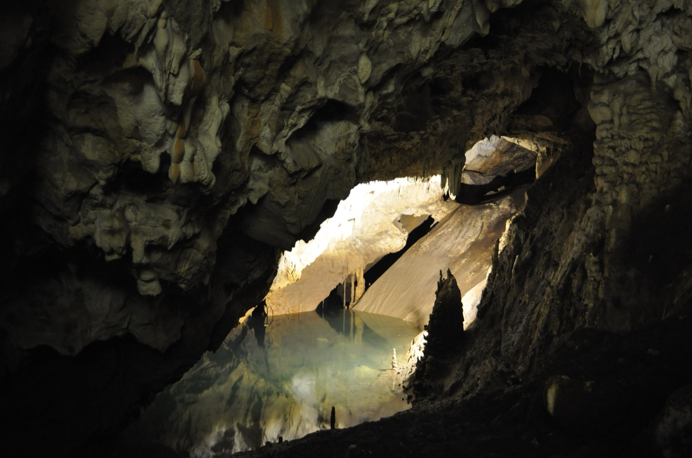

Una montagna con una croce di sessantasei metri e un canyon con dieci grotte, a mezz'ora dalla piazza.
Perché andarci
Skopje si esaurisce in un giorno e mezzo. Quello che la rende un viaggio vero sta fuori: il monte Vodno a sud, che chiude l'orizzonte della città, e il canyon di Matka a ovest, quindici chilometri di roccia e acqua verde.
Sono due gite molto diverse. Il Vodno è un'ora e mezza in tutto, si fa in coda a una giornata e si va per il tramonto. Matka è mezza giornata piena e va fatta la mattina, perché il canyon è stretto e il sole ci entra poco anche d'estate.
A dicembre c'è un terzo elemento che decide: quando la città sta sotto una cappa di smog, il Vodno sta sopra l'inversione termica. Nelle giornate peggiori dell'inverno è il posto dove si respira.
Non provate a farle nello stesso giorno. Con nove ore di luce, Matka la mattina e il Vodno al tramonto significa correre tutto il giorno e vedere male entrambe. Una per giornata.

Monte Vodno

D'inverno la cima può essere sotto la neve anche quando in città non ce n'è.
La montagna arriva a 1.066 metri sulla cima di Krstovar. Si sale in due passi: prima a Sredno Vodno, il Vodno di mezzo, a 557 metri, poi con la funivia fino in cima.
Monte Vodno
Sessantasei metri d'acciaio sulla cima, costruiti nel 2002 per i duemila anni del cristianesimo in Macedonia. È una delle croci più alte del mondo e si vede da quasi tutta la città.
La struttura è a traliccio, dichiaratamente ispirata alla Torre Eiffel, e poggia su una piattaforma di dodici colonne: sono i dodici apostoli. Dentro c'è un ascensore che porta a una piattaforma panoramica in alto.
Di notte la croce è coperta di migliaia di luci ed è il punto di riferimento visivo di Skopje: se vi perdete in città, è sempre a sud.
Tutta la valle del Vardar: la città sotto, le montagne attorno e, nelle giornate limpide, molto lontano. È il miglior punto panoramico della capitale, e a dicembre il tramonto arriva comodo, poco dopo le quattro.
In cima fa molto più freddo che in città e tira vento: sul Vodno la minima registrata nel gennaio 2017 è stata di −24 °C. Portate un capo pesante anche se in piazza bastava la giacca. E non perdete l'ultima corsa delle 16:45: a piedi si scende in un'ora e mezza, al buio.
Canyon di Matka
Quindici chilometri a ovest del centro, sul fiume Treska. Il canyon copre circa cinquemila ettari ed è la gita classica da Skopje.
Arriva fino al parcheggio dell'imbarcadero. Si concorda l'ora del ritorno e l'autista aspetta o torna a prendervi. Diviso per sei fa meno di dieci euro a testa, e risparmia un'ora e mezza di spostamenti.
La soluzione economica: un euro a testa. Ma la fermata non è al canyon e il tratto finale si fa a piedi lungo la strada. L'ultima corsa di ritorno parte alle 19:30, un dato che a dicembre non vi servirà: sarete già rientrati da un pezzo.
L'acqua che vedete non è naturale: il lago di Matka è il più antico lago artificiale del Paese, creato da una diga sul Treska. È per questo che il livello è sempre uguale e l'acqua è ferma e verde.
Canyon di Matka

Il monastero di Sant'Andrea, sulla riva del lago, sotto la parete di roccia.
Dall'imbarcadero parte una passerella scavata nella roccia che corre a filo d'acqua sotto le pareti. In venti minuti si arriva al monastero di Sant'Andrea, una chiesetta medievale minuscola incastrata fra la roccia e il lago: nel canyon ce ne sono diversi, lasciati dai monaci che qui si ritiravano.
D'inverno il sentiero è vuoto, l'acqua è verde scuro e il rumore è solo quello del vento nella gola. È il momento migliore dell'anno per venirci, a patto di avere scarpe che tengono: il camminamento è di pietra e in alcuni punti bagnato.
Anche senza barca, la passerella da sola vale il viaggio. Se le barche non partono — a dicembre dipende dal meteo e dal numero di passeggeri — ci sono comunque due ore buone di cammino sul lago.
Canyon di Matka

Nel canyon ci sono dieci grotte, la più corta di venti metri e la più lunga di 176, più due pozzi verticali profondi una trentina di metri. La più famosa è Vrelo, sulla riva destra del Treska.
Dentro ci sono stalattiti — una grossa al centro della sala è chiamata "la pigna" per la forma — e due laghi sotterranei. Il più piccolo è profondo quasi quindici metri, il più grande arriva a diciotto. La profondità totale della grotta non è nota: si ritiene che sia fra le più profonde d'Europa, forse del mondo.
Nel progetto New7Wonders of Nature è entrata fra i 77 siti naturali finalisti del mondo.
Più lontano
Vale la pena saperlo prima, per non perdere tempo a discuterne sul posto: con due notti e tre mezze giornate, fuori da Skopje ci stanno il Vodno e Matka. Il resto no.
Il lago più bello dei Balcani, patrimonio UNESCO, e la ragione per cui molti tornano in Macedonia. Sono circa tre ore di strada a tratta. In giornata significa sei ore di pullman per quattro ore sul posto, in un giorno che fa buio alle quattro. Merita un viaggio suo.
Circa quaranta minuti a ovest: una moschea del Settecento dipinta a fiori dentro e fuori, unica nei Balcani. È l'unica gita che tecnicamente ci starebbe, ma costa mezza giornata e toglie Matka. Da verificare orari e accesso prima di considerarla.
Le rovine della città romana distrutta dal terremoto del 518: teatro, basilica, terme. Le pietre di Skupi finirono nelle mura del Kale. È vicina e poco visitata, ma d'inverno è un campo aperto e spoglio: andateci solo se avanza tempo e c'è sole.
Tre giorni a Skopje sono giusti per Skopje. Se il gruppo vuole il lago di Ocrida, è un altro viaggio: due notti là, in primavera, quando la luce dura.
Pratica
Terrazza sull'acqua, trota del fiume, šopska, birra Skopsko. D'inverno si mangia dentro. Non è economico come il bazar ma la posizione la paga tutta. Chiamate prima se siete sei: fuori stagione può chiudere presto.
Un caffè o una greana rakija guardando la città che si accende. Poco più di questo: non contateci per mangiare.
Scarpe impermeabili con suola che tiene, un capo pesante in più per la cima del Vodno, guanti, acqua, e contanti: a Matka le barche si pagano in denari e non sempre c'è il bancomat. Il telefono carico, perché le mappe offline servono se il bus vi lascia nel punto sbagliato.
Due telefonate la sera prima: una per confermare che le barche di Matka partano, una per sapere se la funivia del Vodno è in servizio. Entrambe d'inverno saltano senza preavviso, e sono le due uniche cose di questo capitolo che non si possono improvvisare.
Crediti fotografici
Foto da Wikimedia Commons, pubblicate con licenze Creative Commons o in pubblico dominio. Mappe: Esri, HERE, Garmin e i contributori di OpenStreetMap. Dati stradali: OpenStreetMap.
Appunti